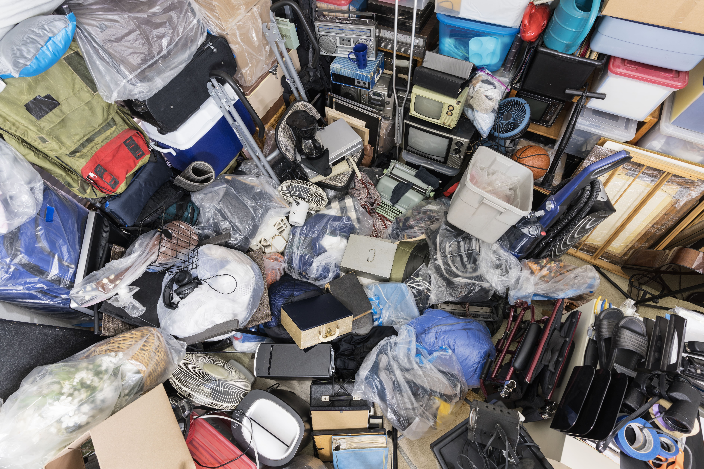
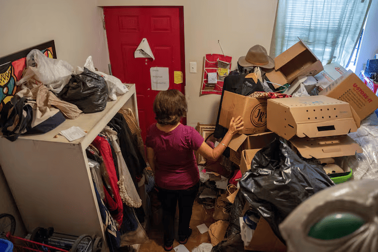
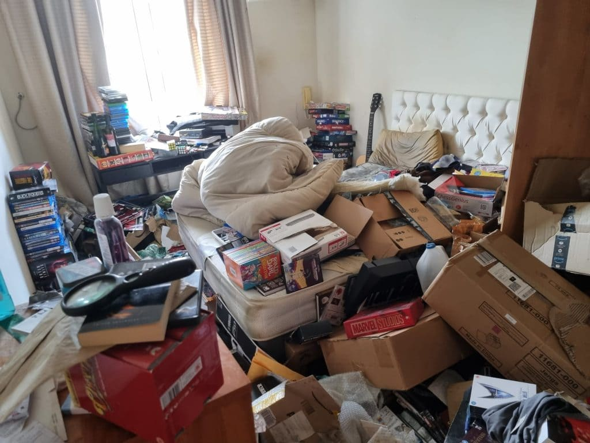
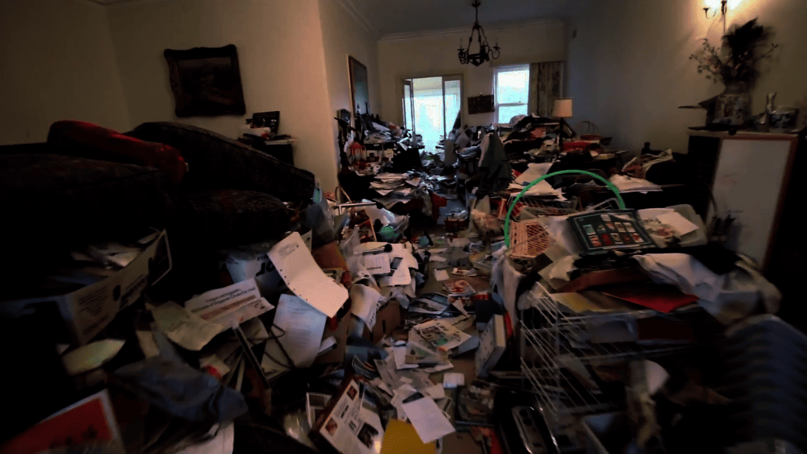
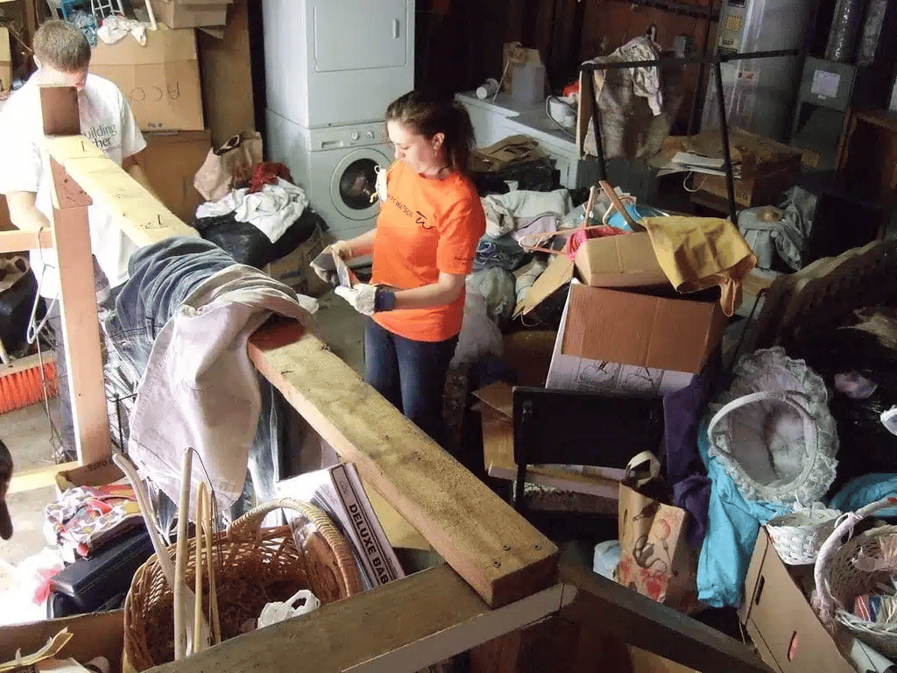
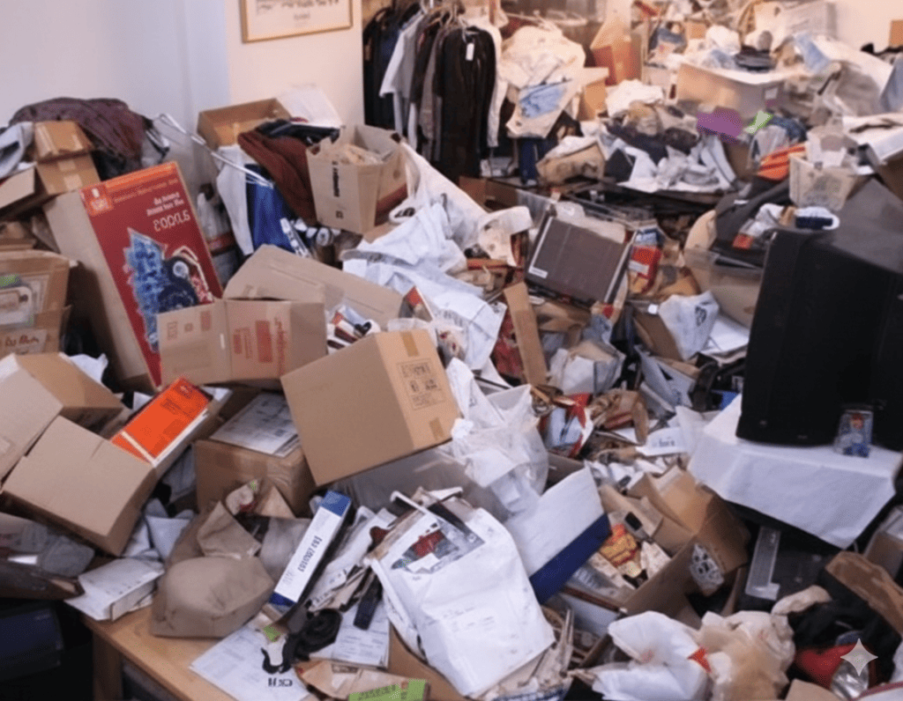
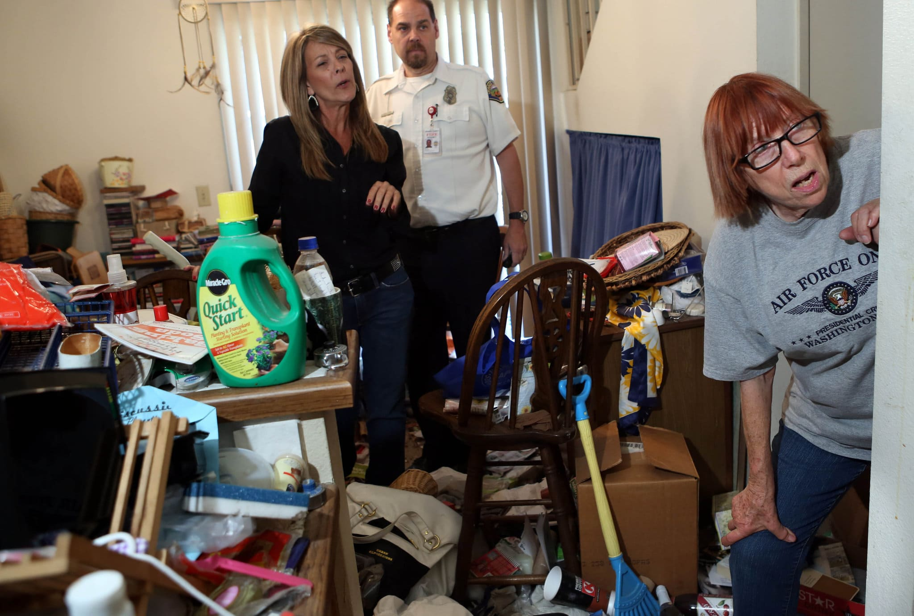
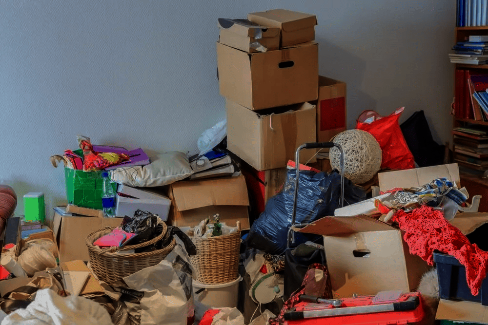
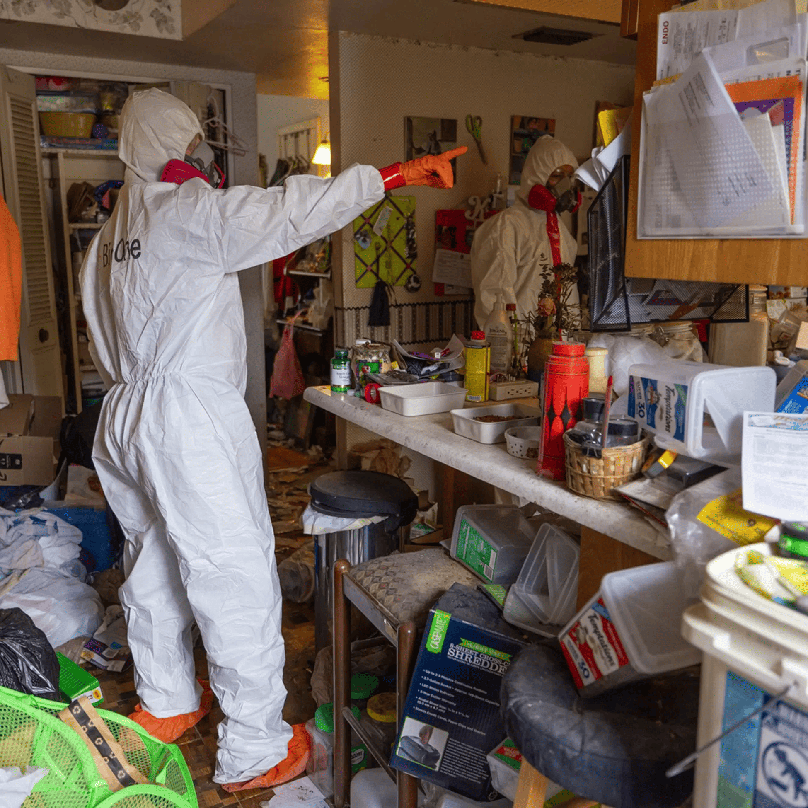

Shedding light on the hidden struggles behind cluttered spaces.
Hoarding disorder is a misunderstood mental health condition that affects millions worldwide. This site aims to raise awareness, reduce stigma, and guide individuals toward support.
Hoarding disorder is a complex mental health condition rooted in emotional, cognitive, and behavioral challenges. Understanding its definition, symptoms, and underlying causes helps reveal why it goes beyond simple clutter.

Hoarding disorder is a mental health condition involving a persistent difficulty discarding possessions, regardless of their value, leading to cluttered living spaces. It is often driven by strong emotional attachment and distress, and can gradually worsen over time if left untreated.
Some of the symptoms of hoarding include:

Many individuals with hoarding disorder experience anxiety, fear of losing items,
depression, or effects from traumatic life events, along with strong emotional
attachment to possessions.
Cognitive challenges such as difficulty with
decision-making,
organization, and prioritization, can also make it harder to manage clutter.

There are emotional, cognitive, and behavioral elements that contribute to the development of a hoarding disorder. It has nothing to do with laziness, but rather a series of underlying psychological challenges that the person may be going through.

Hoarding disorder affects millions worldwide, across all ages, cultures, and backgrounds.
Hoarding disorder can affect nearly every aspect of a person’s life, from their mental and emotional well-being to their physical environment and relationships. What may begin as difficulty letting go of items can gradually lead to overwhelming clutter, distress, and unsafe living conditions. These impacts often extend beyond the individual, affecting families, communities, and overall quality of life.

Hoarding disorder is closely tied to emotional and psychological challenges that can affect daily functioning and overall well-being. These experiences often make it difficult for individuals to seek help or maintain connections with others.

As clutter accumulates, the physical environment can become increasingly unsafe. What begins as minor disorganization can gradually turn into serious health and safety concerns if left unaddressed.
→ These risks often develop progressively, with living conditions worsening through recognizable stages over time.

Hoarding can place significant pressure on relationships, especially as the condition progresses and begins to interfere with daily life. Misunderstandings about the disorder can further increase tension between individuals and their support systems.
→ These challenges often develop gradually, following a long-term pattern as symptoms worsen over time.
Hoarding can also create financial strain, especially as accumulation and disorganization make it harder to manage resources effectively. Over time, these challenges can lead to more serious economic consequences.

Without support, the challenges of hoarding disorder can continue to build over time—but even as they progress, awareness, support, and consistent small steps can help individuals regain control and work toward recovery.
Although hoarding disorder is a hard condition to control, it is possible for a person to heal from hoarding disorder if they receive proper help. In most cases, the main focus is to control and address the emotional and behavioral aspects of the disorder.
Breaking the problem down into smaller steps, such as working on the problem in one area at a time, can be a good way to begin for anyone who wants to overcome the condition of hoarding disorder.
Recovery is possible with the right support. Whether you’re struggling or helping someone else, there are resources available.
See Resources ▼
Getting help from professionals can provide guidance and structure.
Support from others can reduce isolation and build encouragement.
Starting small can make the process more manageable.